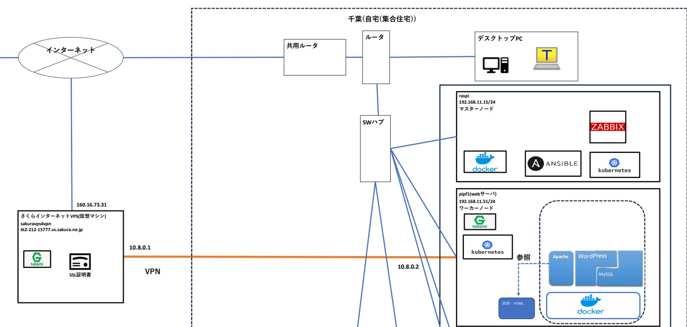

8. VPN構成と活用
外部VPSと自宅サーバ間のセキュアな通信のため、OpenVPNを用いたVPN接続を構成しました。
使用ソフトウェア
- OpenVPN： サーバ・クライアント構成
ネットワーク構成概要
- VPS（OpenVPNサーバ） ⇔ pipf1（クライアント）
- Nginxのリバースプロキシと連携し、Dockerサービスを外部公開
構成図(拡大)
接続性能の検証
VPS(VPNサーバ)→pipf1(VPNクライアント)
iperf3 -c 10.8.0.1
Connecting to host 10.8.0.1, port 5201
[ 5] local 10.8.0.2 port 46530 connected to 10.8.0.1 port 5201
[ ID] Interval Transfer Bitrate Retr Cwnd
[ 5] 0.00-1.00 sec 9.91 MBytes 83.1 Mbits/sec 23 137 KBytes
[ 5] 1.00-2.00 sec 10.1 MBytes 84.6 Mbits/sec 18 110 KBytes
[ 5] 2.00-3.00 sec 9.59 MBytes 80.4 Mbits/sec 19 118 KBytes
[ 5] 3.00-4.00 sec 10.5 MBytes 88.2 Mbits/sec 0 166 KBytes
[ 5] 4.00-5.00 sec 10.1 MBytes 84.6 Mbits/sec 35 111 KBytes
[ 5] 5.00-6.00 sec 10.1 MBytes 85.1 Mbits/sec 0 160 KBytes
[ 5] 6.00-7.00 sec 10.0 MBytes 84.1 Mbits/sec 0 196 KBytes
[ 5] 7.00-8.00 sec 10.0 MBytes 84.1 Mbits/sec 49 87.3 KBytes
[ 5] 8.00-9.00 sec 10.2 MBytes 85.6 Mbits/sec 0 146 KBytes
[ 5] 9.00-10.00 sec 10.2 MBytes 85.6 Mbits/sec 0 186 KBytes
- - - - - - - - - - - - - - - - - - - - - - - - -
[ ID] Interval Transfer Bitrate Retr
[ 5] 0.00-10.00 sec 101 MBytes 84.6 Mbits/sec 144 sender
[ 5] 0.00-10.01 sec 100 MBytes 84.1 Mbits/sec receiver
iperf Done.VPS(VPNサーバ)←pipf1(VPNクライアント)
pf1@pipf1:~ $ iperf3 -c 10.8.0.1 -R
Connecting to host 10.8.0.1, port 5201
Reverse mode, remote host 10.8.0.1 is sending
[ 5] local 10.8.0.2 port 35910 connected to 10.8.0.1 port 5201
[ ID] Interval Transfer Bitrate
[ 5] 0.00-1.00 sec 10.2 MBytes 85.6 Mbits/sec
[ 5] 1.00-2.00 sec 10.4 MBytes 86.9 Mbits/sec
[ 5] 2.00-3.00 sec 10.4 MBytes 86.9 Mbits/sec
[ 5] 3.00-4.00 sec 10.4 MBytes 87.0 Mbits/sec
[ 5] 4.00-5.00 sec 10.4 MBytes 86.9 Mbits/sec
[ 5] 5.00-6.00 sec 10.3 MBytes 86.8 Mbits/sec
[ 5] 6.00-7.00 sec 10.4 MBytes 87.0 Mbits/sec
[ 5] 7.00-8.00 sec 10.4 MBytes 87.0 Mbits/sec
[ 5] 8.00-9.00 sec 10.4 MBytes 87.0 Mbits/sec
[ 5] 9.00-10.00 sec 10.4 MBytes 86.9 Mbits/sec
- - - - - - - - - - - - - - - - - - - - - - - - -
[ ID] Interval Transfer Bitrate Retr
[ 5] 0.00-10.01 sec 104 MBytes 87.4 Mbits/sec 17 sender
[ 5] 0.00-10.00 sec 103 MBytes 86.8 Mbits/sec receiver
iperf Done.今後の改善ポイント
- WireGuardへの置き換え検証（軽量・高速）
- トラフィックのログ集約と可視化（Grafana連携）